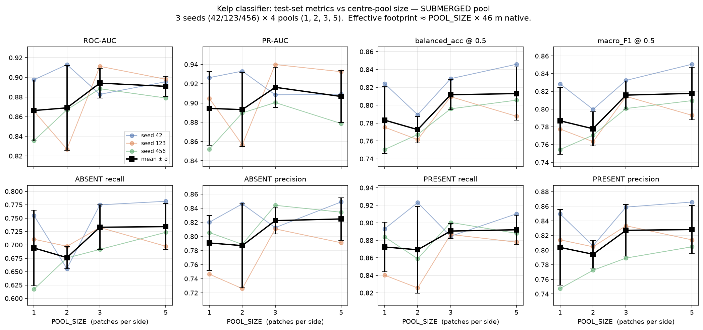
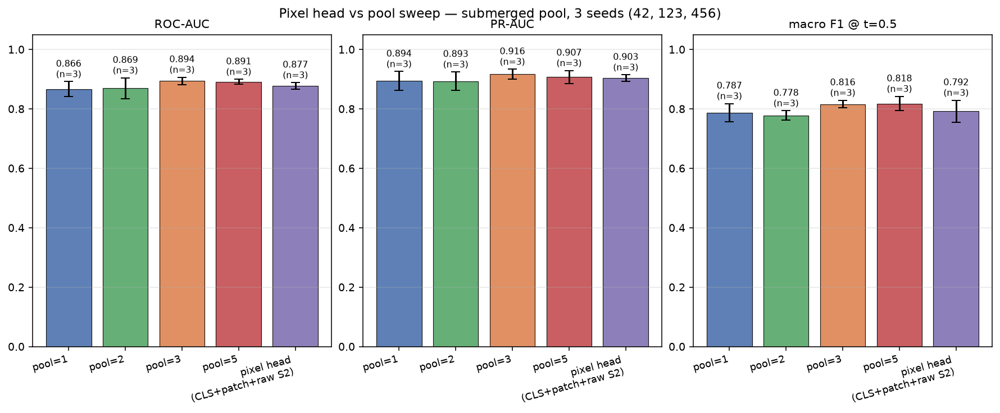
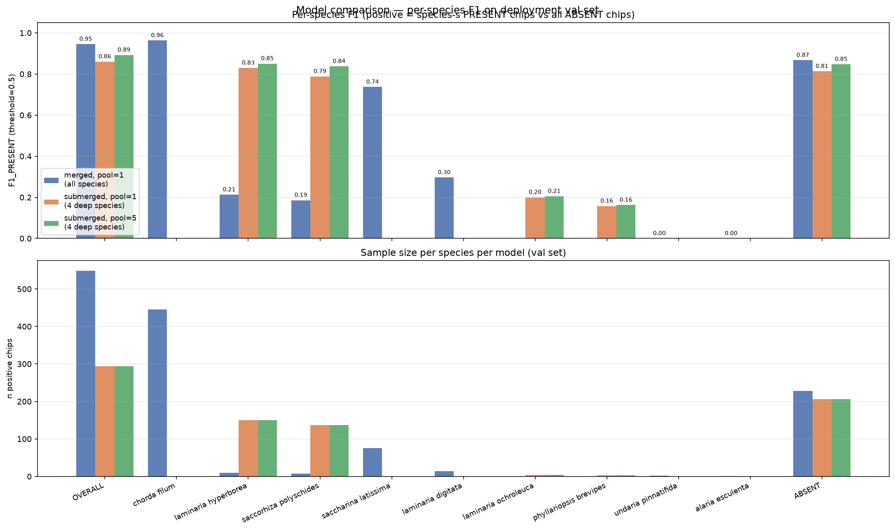
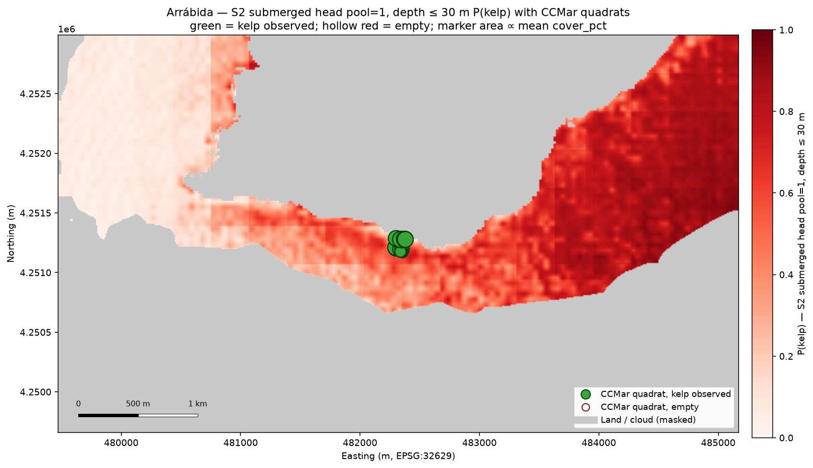
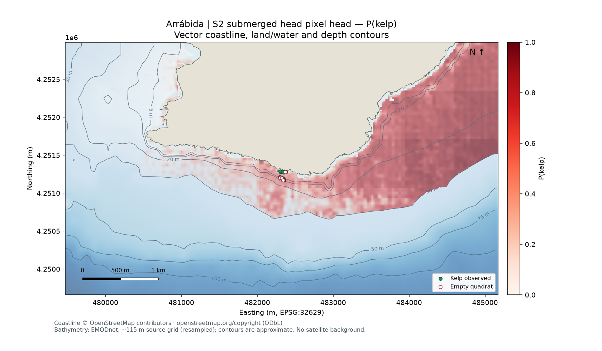
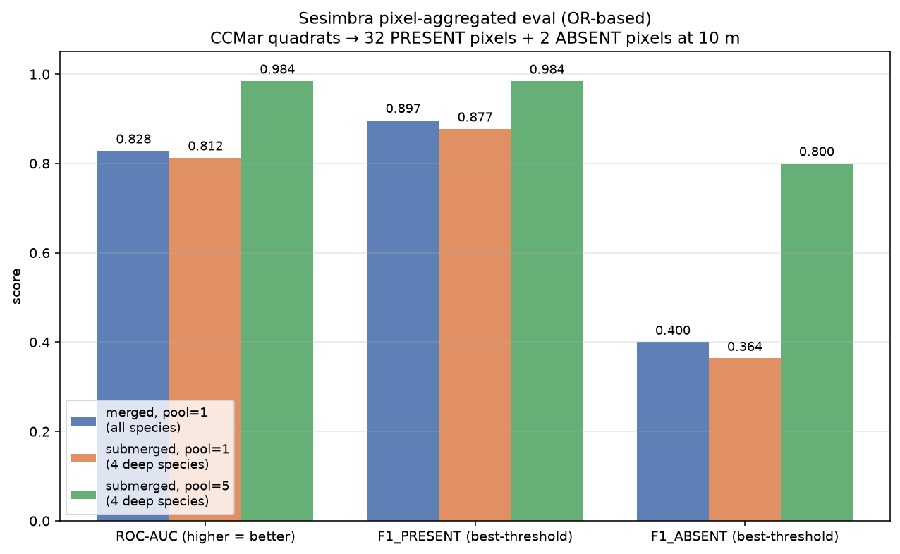

KelpObserve — experiment summary
Kelp presence/absence classifier for European coastal waters. Four model configurations compared across two independent evaluations — a held-out test set (3-seed splits, chip-level) and the Sesimbra CCMar quadrats (deployment heads, real-world ground truth).
The problem
No labelled European kelp dataset exists at pixel resolution. We only have point observations (GBIF, OBIS, JNCC) with ≤ 10 m GPS uncertainty for PRESENT and "no kelp seen here" reports for ABSENT.
A binary classifier over 128 × 128 Sentinel-2 chips (~1.3 km footprint per chip) is trained on those point labels, one label per chip. At inference we rasterise a whole scene by tiling with overlapping chips and mosaicking the per-chip predictions. The effective spatial resolution of the prediction is capped by Clay's patch size (~46 m per patch) rather than by Sentinel-2's 10 m pixel grid.
For the Sesimbra site we restrict training to four deep-water species that match what CCMar surveys (Saccorhiza polyschides, Laminaria hyperborea, Laminaria ochroleuca, Phyllariopsis brevipes). ABSENT is species-agnostic — any chip with no PRESENT observation is a valid negative.
Models we trained
All four share the same MLP head architecture
(hidden → 512 → 128 → 1, dropout 0.3, focal loss α=0.5 γ=2.0).
They differ in training subset, input dimensionality, and
effective spatial footprint.
| Model | Subset | Input dim | Head footprint | Notes |
|---|---|---|---|---|
| merged pool = 1 | merged (all species) | 2048 | ~46 m | General Europe-wide baseline. |
| submerged pool = 1 | submerged (4 species) | 2048 | ~46 m | Same head input as merged; species-restricted training. |
| submerged pool = 5 | submerged | 2048 | ~229 m | Mean of centre 5×5 Clay patches; wider context. |
| submerged pixel head | submerged | 2054 | ~46 m Clay + 10 m raw S2 | Head runs at every 10 m pixel during rasterisation. |
What "pool = N" means
Clay v1.5 turns each 128 × 128 chip into a 28 × 28 grid of patch tokens (each token is a 1024-D vector representing roughly a 46 × 46 m ground region, after Clay's internal 128→224 resize with patch size 8).
The chip head takes as input the CLS token (a chip-global 1024-D
summary) concatenated with a spatial average of an
N × N window of patch tokens centred on the chip centre —
POOL_SIZE = N selects the window edge length:
| POOL_SIZE | Patches averaged | Effective footprint | What the model "looks at" |
|---|---|---|---|
| 1 | 1 × 1 = 1 | ~46 × 46 m | Just the single Clay patch containing the labelled pixel — sharpest. |
| 2 | 2 × 2 = 4 | ~92 × 92 m | The 4 patches straddling the chip centre. |
| 3 | 3 × 3 = 9 | ~137 × 137 m | Immediate neighbourhood. |
| 5 | 5 × 5 = 25 | ~229 × 229 m | Broader context — smooths over local noise and small-scale spatial errors. |
A larger pool trades spatial sharpness for spectral stability: pool = 1 predicts on a single patch's spectra and can be thrown off by cloud edges or spectral outliers; pool = 5 averages 25 patches and is more robust but its prediction is a claim about a ~230 m neighbourhood, not the exact anchor pixel. Since our labels have ≤ 10 m GPS uncertainty, either resolution is legitimate — the empirical winner is whichever generalises better, which we measure by Evaluation 1 (the 3-seed pool sweep below).
Regardless of pool size, the output raster is still 10 m per pixel (the chip head runs at every 28 × 28 patch position per chip and the result is bilinear-upsampled to 10 m during rasterisation). Pool controls the effective footprint — how large a neighbourhood contributes to each pixel's prediction — not the addressable pixel size.
Why we cache only the centre 7 × 7 patches
Running Clay v1.5 over every chip is expensive (~10 min on GPU for the
submerged pool's 3,733 chips). The training pipeline caches Clay's
output to identity_submerged.npz once, and every subsequent
head training run reads from that cache without touching Clay.
Storing all 28 × 28 patch tokens per chip would balloon the cache to
~3.1 GB. But we only ever use the centre-pool patches —
the largest pool we validate is POOL_SIZE = 7, which reads a
7 × 7 window centred on chip patch (13, 13). So the cache stores
only that centre 7 × 7 window per chip:
| Cache field | Shape (submerged pool, N = 3,733) | Size | Purpose |
|---|---|---|---|
gbif_ids |
(3,733,) | – | Chip identifier per row. |
cls |
(3,733, 1024) | 15 MB | Clay's CLS token — chip-global 1024-D summary. |
centre_patches |
(3,733, 7, 7, 1024) | 733 MB | Centre 7 × 7 patch tokens — covers POOL_SIZE ∈ {1, 2, 3, 5, 7}. |
raw_center (pixel head only) |
(3,733, 6) | 88 KB | Raw 6-band S2 reflectance at chip-centre pixel (64, 64). |
Total cache: ~750 MB — about a quarter of what full-grid storage would cost.
At training time train_head.py reads
centre_patches[:, lo:hi, lo:hi, :], means it, concatenates
with CLS. One Clay pass then covers the entire pool sweep. If we ever
want to try POOL_SIZE = 9 or wider, we widen
CACHE_K and re-run precompute_clay_embeddings.py.
Two independent evaluations
Every model configuration is evaluated in two different ways, with different heads, on different data. Do not conflate them.
| Evaluation 1 — held-out test set | Evaluation 2 — Sesimbra CCMar | |
|---|---|---|
| What it measures | Generalisation within the training distribution. | Transfer to a real-world site with independent ground truth. |
| Split file | splits_submerged/split_seed{42,123,456}.json |
splits_submerged/split_single.json |
| Partitions | train / val / test (74–78 / 12–13 / 10–13 %) | train + val only (no test — deployment heads use maximum data) |
| Heads used | 15 heads: head_seed{42,123,456}_p{1,2,3,5}/ + pixel/head_seed{42,123,456}/ |
3 deployment heads: head_single_p{1,5}/ + head_single_pixel/ |
| Evaluation set | ~570 chips per seed's test split (chip-level labels) | 60 CCMar quadrat events → 34 unique S2 pixels (pixel-level, OR-aggregated) |
| Metric | ROC-AUC + macro-F1 @ t=0.5, mean ± std across 3 seeds | ROC-AUC + F1PRESENT + F1ABSENT at best-threshold (val-tuned) |
| Sample-size trust | High — three independent splits, ~1,700 total test chips. | Low — 34 pixels, only 2 negatives. Direction only, not calibrated numbers. |
Why two different heads per configuration?
For the 3-seed splits we hold out 10–13 % of data for testing, so
training uses the remaining ~80 %. For deployment, we can't afford
that: we want every labelled chip contributing to the final head.
So the deployment split (split_single.json) uses train+val only
(no test set), and the evaluation shifts from held-out chips to a
fully external dataset (CCMar). Each configuration therefore has two
trained heads with the same architecture but different training data.
Headline result
Submerged pool = 5 wins on both evaluations — the 3-seed ROC-AUC and the Sesimbra CCMar pixel-aggregated evaluation. Pixel head produces sharper 10 m outputs but does not out-score pool = 5 on either.
Best model — both evaluations
submerged pool = 5
Eval 1 test-set ROC-AUC 0.891 ± 0.009 (3 seeds) · Eval 2 CCMar AUC 0.984 (deployment head)
Chips in submerged pool
3,733
2,200 P / 1,533 A
Trained heads
18
15 for Eval 1 (3 seeds × 5 configs) + 3 deployment for Eval 2
CCMar quadrats
60
53 PRESENT / 7 ABSENT · 34 unique S2 pixels
Evaluation 1 — Held-out test set (3-seed splits)
Heads: head_seed{42,123,456}_p{1,2,3,5}/ +
pixel/head_seed{42,123,456}/.
Each seed's model is trained on that split's train subset, model-selected on
its val subset, and reported here on its held-out test subset (~570 chips
per seed, chip-level labels). Threshold = 0.5. Mean ± std across the 3 seeds.
| Configuration | ROC-AUC | PR-AUC | macro F1 |
|---|---|---|---|
| submerged pool = 1 | 0.866 ± 0.025 | 0.894 ± 0.031 | 0.787 ± 0.031 |
| submerged pool = 2 | 0.869 ± 0.035 | 0.893 ± 0.031 | 0.778 ± 0.016 |
| submerged pool = 3 | 0.894 ± 0.012 | 0.916 ± 0.017 | 0.816 ± 0.013 |
| submerged pool = 5 | 0.891 ± 0.009 | 0.907 ± 0.022 | 0.818 ± 0.024 |
| submerged pixel head | 0.877 ± 0.011 | 0.903 ± 0.011 | 0.792 ± 0.037 |


Why does pixel head not help on training-set metrics? Every chip is centred on its observation coord, so the labelled pixel is always at chip centre. Clay's centre patch (14, 14) is already the model's representation of exactly that neighbourhood. Adding 6 raw S2 spectral features to a 1024-D learned representation of the same region adds marginal information at best. The pixel head's real advantage — per-pixel decisions at inference — is not measurable at chip-level supervision.
Per-species F1 (Evaluation 1, deployment val set)
Uses the deployment heads' own val subset from split_single.json.
For each species that appears as PRESENT in val, F1 is computed on
{ species-s PRESENT chips } ∪ { all ABSENT chips }.
Isolates how well each model separates one species' PRESENT from generic
ABSENT. Chip-level labels — this is not the CCMar external
evaluation (see below).

Sesimbra / Arrábida rasterisation (deployment heads)
Heads: head_single_p{1,5}/ +
head_single_pixel/. Applied to a single low-cloud S2 scene
(S2A_29SMC_20260609_0_L2A, 2.3 % cloud) over the Arrábida bbox
(333 × 570 pixels, 10 m native).
Depth-based post-filter (> 30 m masked out)
After the model produces a raw P(kelp) raster, we mask every pixel where the sea floor is deeper than 30 m to NaN. Rationale:
- Ecological floor. The four target species do not grow below ~30 m in Portuguese waters — light attenuation in the photic zone caps kelp habitat. Any P(kelp) > 0.5 over deeper water is a false positive from open-water spectra the model was never trained to reject.
- Matches training-data distribution. Our submerged training pool's PRESENT chips are all in shallow water (median depth ~24 m); the model has no signal about what "kelp at 60 m" would look like, and its predictions there are extrapolation.
- Observed false-positive band. Before masking, the pool = 1 raster placed a spurious high-P zone in ~50 m water in the SE corner of Arrábida — cleaned up entirely by the mask.
Implementation. apply_bathymetry_mask.py
fetches EMODnet bathymetry via WCS (public, no auth, ~115 m native),
reprojects onto the raster's 10 m UTM grid (bilinear), and NaN-masks
pixels where depth > --max-depth-m.
| Metric | Value |
|---|---|
| Depth threshold | 30 m |
| Valid pixels before masking | 142,948 |
| Valid pixels after masking | 62,997 |
| Pixels removed | 79,951 (55.9 %) |
| Depth stats over Arrábida bbox (m below sea level) | median 24.4 · p75 45.6 · max 125.3 |
Effect on Evaluation 2: zero. All 60 CCMar quadrats sit at depths ≤ 17 m — well inside the mask — so the CCMar pixel-agg eval below is computed on the depth-masked rasters and the depth threshold does not change its numbers.
Overlays — pool = 1 (~ 46 m footprint, depth-masked)


Overlays — pixel head (per-10 m decision, depth-masked)

Evaluation 2 — Sesimbra CCMar pixel-aggregated (deployment heads)
External real-world evaluation. Heads: same
head_single_p{1,5}/ + head_single_pixel/ as the
rasters above. Ground truth: CCMar's 60 quadrat events (53 PRESENT + 7
ABSENT) from the Aquaserv 2026 survey. Their GPS points fall inside just
34 unique S2 pixels — the test is small and dominated by geometry.
OR-based aggregation: a pixel is PRESENT if any event landing in
it is PRESENT.
| Model | ROC-AUC | F1PRESENT | F1ABSENT | Best t |
|---|---|---|---|---|
| merged pool = 1 | 0.828 | 0.897 | 0.400 | 0.130 |
| submerged pool = 1 | 0.812 | 0.877 | 0.364 | 0.194 |
| submerged pool = 5 | 0.984 | 0.984 | 0.800 | 0.289 |
| submerged pixel head | 0.719 | 0.815 | 0.286 | 0.442 |

Interpretation. Submerged pool = 5 dominates the CCMar eval, but with only 2 negative pixels the F1ABSENT column is three events wide — a single flip changes the number by ~0.15.
The pixel head loses because per-pixel decisions concentrate probability into 10 m spots that don't necessarily land on the same pixel as the CCMar quadrat centre. Pool = 5's ~229 m footprint smooths over that misalignment.
This does not prove per-pixel supervision is useless — it proves that chip-level supervision does not transfer to sub-46 m spatial precision on the CCMar geometry, which is what we expected.
Other experiments
Splits balancing
Two split algorithms co-exist. The 3-seed splits
(split_seed{42,123,456}.json) leave a held-out test set for
honest evaluation; the deployment split
(split_single.json) is a single train/val partition with no
test set for maximum training data. Both share:
- 50 m location safety — any two chips within 50 m end up in the same partition (P and A alike). Prevents label leakage from co-located observations.
- Cloud × water bin stratification — A-carrying
clusters are stratified by
(cloud_bin, water_bin)so the resulting P and A distributions match on those axes. - P subselected to match A per water bin, with
λ_w = 2000water penalty and a chip-count cap that prevents high-water bins from over-contributing. - Deployment split adds N-candidate min-divergence search (default N = 50) — runs the greedy P subselection multiple times with different seeds, keeps the split with lowest KL divergence between P and A on the (cloud, water) marginals.
PNEO unsupervised (dead end)
Tried three unsupervised approaches on ~1 m PNEO imagery over the Sesimbra
site (anomaly-from-water, vegetation indices, dark-blob). Even with
physical corrections (Hedley 2005 sun-glint, Lyzenga 1978 water-column,
local reference), the unsupervised signal is too weak to separate kelp
from other seabed patterns. Full write-up in
kelp-detection/unsupervised/PNEO_UNSUPERVISED.md.